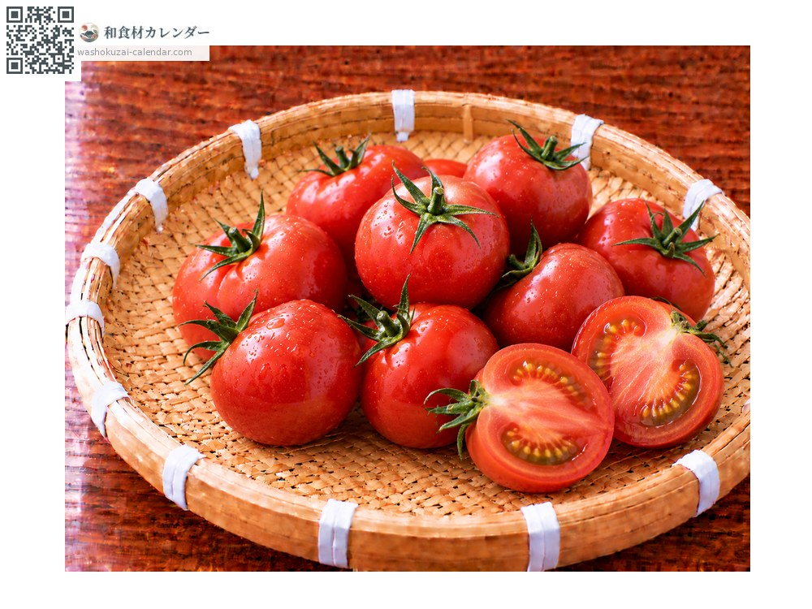
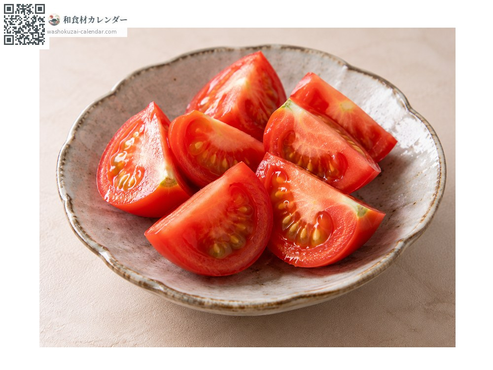
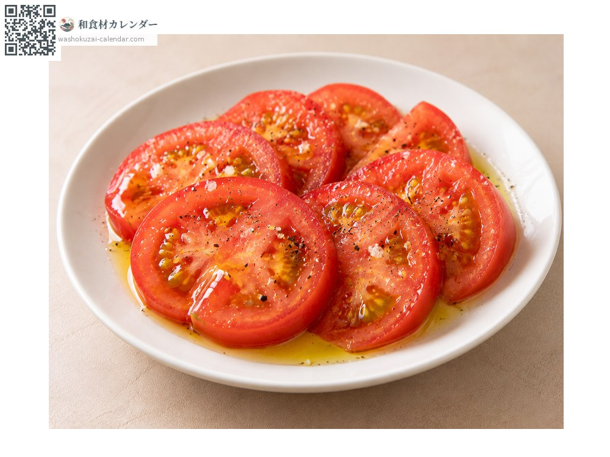
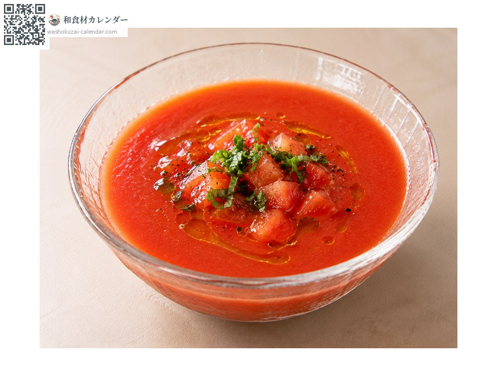
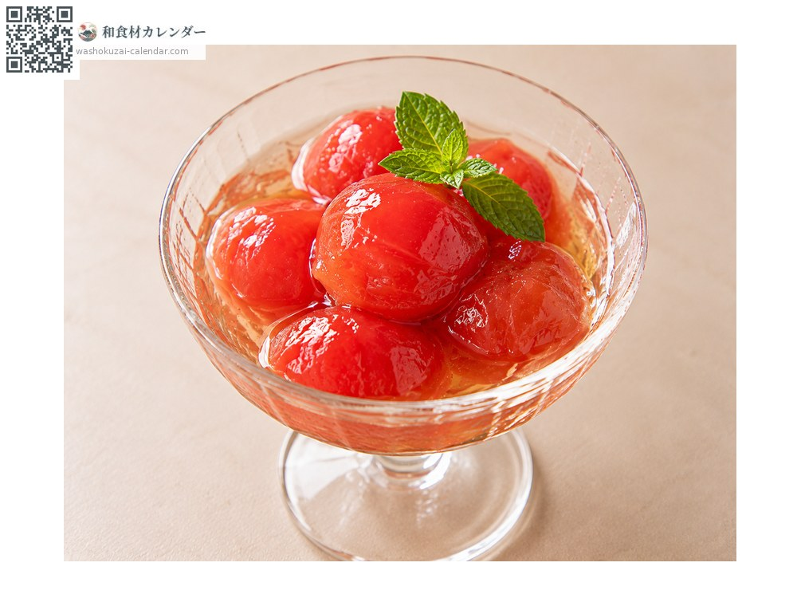

蔬菜
水果番茄
フルーツトマト ふるーつとまと
应季时期为1月、2月、3月、4月、5月、12月

应季时期
1月
2月
3月
4月
5月
6月
7月
8月
9月
10月
11月
12月
应季有供应
烹饪方法

直接生食
冰镇后整颗咬，或切成瓣状。甜得像水果一样。

沙拉
只用盐与橄榄油，甜味会格外突出。

冷汤
过筛后冰镇，浓郁的甜味与酸味交织。

甜点
做成蜜渍，可以当水果看待。
挑选方法
个头小但拿起来沉甸甸的。颜色深红，蒂头生气蓬勃。
保存方法
常温或冷藏皆可。食用前冰镇能让甜味更突出。
主要产地
小知识
不是品种而是栽培方式的称呼。极度限制水分来栽培，使糖度提高到八度以上。有静冈与长野的「Amela」、高知的「德谷番茄」等品牌。一般番茄的时令在夏天，水果番茄却是从冬天到春天最甜。